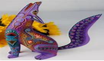
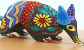

|
¿Qué es el arte? Se denomina artesanía tanto al trabajo como a las creaciones realizadas por los artesanos (una persona que realiza trabajos manuales). Es un tipo de arte en el que se trabaja fundamentalmente con las manos, moldeando diversos objetos con fines comerciales o meramente artísticos o creativos. Una de las características fundamentales de este trabajo es que se desarrolla sin la ayuda de máquinas o de procesos automatizados. Esto convierte a cada obra artesanal en un objeto único e incomparable, lo que le da un carácter sumamente especial.  |
|||